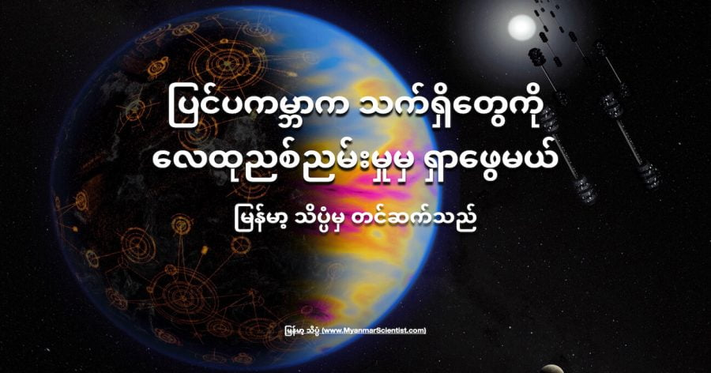

အကယ်လို့သာ ကျွန်တော်တို့ရဲ့ အနီးအနား ကြယ် အဖွဲ့အစည်း တွေမှာ မှီတင်း နေထိုင်တဲ့ နည်းပညာ အဆင့် မြင့်မားတဲ့ သက်ရှိ အဖွဲ့အစည်းတွေ ရှိနေမယ် ဆိုရင် သူတို့ကို ရှာဖွေဖို့ အတွက် ဒီ ဂြိုလ်တွေရဲ့ လေထု ညစ်ညမ်းမှုကို တိုင်းထွာ ခြင်းအားဖြင့် ရှာဖွေ နိင်မယ်လို့ နာဆာက သုတေသန ပညာရှင်တွေက သုတေသန စာတမ်း တစ်စောင်မှာ တင်ပြလိုက်ပါတယ်။
ဒီ နာဆာ အာကာသ အေဂျင်စီရဲ့ သိပ္ပံ ပညာရှင်တွေ ပြုလုပ်တဲ့ သုတေသနမှာ အဓိက အားဖြင့် စက်မှု လုပ်ငန်းတွေနဲ့ စက်ပစ္စည်း တွေကနေ လေထုထဲကို ထုတ်လွှတ်တဲ့ NO2 ခေါ် နိုက်ထရိုဂျင် ဒိုင် အောက်ဆိုဒ် ဓါတ်ငွေ့ ပါဝင်မှု ကို အဓိက လေ့လာ အကြံပြု ထားတာ ဖြစ်ပါတယ်။
ဒီ နိုက်ထရိုဂျင် ဒိုင်အောက်ဆိုဒ် ဓါတ်ငွေ့ဟာ အဓိက အားဖြင့်တော့ ရုပ်ကြွင်း လောင်စာ (Fossil Fuel) တွေ လောင်ကြွမ်းပြီး ထွက်ပေါ်လာတဲ့ ဓါတု ဒြပ်ပေါင်း တစ်မျိုး ဖြစ်ပါတယ်။ (ရုပ်ကြွင်း လောင်စာ ဆိုတာက ရှေး နှစ် သန်းပေါင်း များစွာက အပင်နဲ့ တိရိစ္ဆာန်တွေ သေပြီး ကျန်ခဲ့တဲ့ ရုပ်ကြွင်းကနေ ဖြစ်လာတဲ့ လောင်စာပါ။ မြေကြီးထဲက တူးလို့ ရတဲ့ ရေနံ နဲ့ ရေနံထွက် ပစ္စည်းတွေ၊ သဘာဝ ဓါတ်ငွေ့ နဲ့ ကျောက်မီးသွေး တို့ဟာ ဒီ ရုပ်ကြွင်းလောင်စာ တွေဖြစ်ပါတယ်။)
နိုက်ထရိုဂျင် ဒိုင်အောက်ဆိုဒ်ကို ရုပ်ကြွင်းလောင်စာ လောင်ကြွမ်းမှု တစ်ခုထဲ ကနေ ရတာတော့ မဟုတ်ပါဘူး။ စက်မှု လုပ်ငန်း မဟုတ်တဲ့ သဘာဝ ဖြစ်စဉ်တွေ ဖြစ်တဲ့ မိုးကြိုး ပစ်ခြင်း၊ မီးတောင် ပေါက်ကွဲခြင်းနဲ့ အခြား ဇီဝ ဖြစ်စဉ် တွေကနေလဲ နိုက်ထရိုဂျင် ဒိုင်အောက်ဆိုဒ် ကို ထုတ်ပေးပါတယ်။
“ကမ္ဘာ့ လေထုထဲမှာ ရှိတဲ့ နိုက်ထရိုဂျင် ဒိုင်အောက်ဆိုဒ် အများစုက လူသားတွေရဲ့ သုံးစွဲမှု ကနေ ဖြစ်လာတဲ့ ဓါတ်ငွေ့တွေ ဖြစ်ကြပါတယ်။ ဥပမာ ကားအင်ဂျင်တွေ ကနေ ထွက်တယ်။ သဘာဝ ဓါတ်ငွေ့ စက်ရုံ တွေကနေ ထွက်တယ်” လို့ နာဆာ အာကာသ အေဂျင်စီ ဂေါ့ဒတ် အာကာသ ပျံသန်းမှု ဗဟိုဌာန (NASA’s Goddard Space Flight Center) က သုတေသီ တစ်ဦး ဖြစ်တဲ့ ရာဗီ ကော့ပါရာပူ (Ravi Kopparapu) က ပြောပါတယ်။
“ကမ္ဘာ့ လေထု အနိမ့်ပိုင်း (၁၀ ကီလို မီတာ နဲ့ ၁၅ ကီလို မီတာ အမြင့်အကြား) လေထုထဲမှာ လူသားတွေကြောင့် ထွက်တဲ့ NO2 က သဘာဝ အားဖြင့် ဖြစ်လာတဲ့ NO2 ပမာဏထက် ပိုများပါတယ်။ ဒါ့ကြောင့် သက်ရှိတွေ ရှင်သန် ဖြစ်ထွန်းနိုင်ဖို့ အခြေအနေ ပေးတဲ့ ဂြိုဟ် (Habitable planet) တွေရဲ့ လေထုထဲမှာ NO2 ကို ရှာတွေ့ ခဲ့မယ် ဆိုရင် ဒါဟာ ဒီ ဂြိုဟ်ပေါ်မှာ စက်မှု ထွန်းကားတဲ့ သက်ရှိ အဖွဲအစည်း ရှိကောင်း ရှိနေနိုင်တယ် ဆိုတာကို ညွှန်ပြနေ ပါတယ်။” လို့ သူက ဆက်ပြောပါတယ်။
ရာဗီ ကော့ပါရာပူ ဟာ ဒီ နာဆာ သုတေသန စာတမ်းကို ဦးဆောင် ရေးသားသူ ဖြစ်ပါတယ်။ ဒီ သုတေသန စာတမ်းကို Astrophysical Journal မှာ တင်ပြ ထားတာ ဖြစ်ပါတယ်။ ဒီ သုတေသန စာတမ်း မူရင်းကို ဒီနေရာမှာ ဖတ်ရှု နိုင်ပါတယ်။ Nitrogen Dioxide Pollution as a Signature of Extraterrestrial Technology.
ယခု အချိန်အထိ နက္ခတ် ပညာရှင် တွေဟာ အခြား ကြယ်တွေကို လှည့်ပတ် နေတဲ့ ဂြိုဟ်ပေါင်း ၄,၀၀၀ လောက် ရှာဖွေ တွေ့ရှိ ထားပြီး ဖြစ်ပါတယ်။ ဒီ အထဲက အချို့ ဂြိုလ်တွေဟာ သက်ရှိတွေ ပေါက်ဖွား ဖြစ်ထွန်း ပြီး ရှင်သန် နေထိုင် နိုင်တဲ့အ အခြေအနေ မျိုး ရှိကြ ပါတယ်။ ဒီ သက်ရှိတွေ ဖြစ်ထွန်း ရှင်သန် နေနိုင်တဲ့ ဂြိုဟ်တွေ ထဲက အချို့ ဂြိုဟ်တွေပေါ်မှာ အဆင့်မြင့် သက်ရှိတွေ ဖြစ်ထွန်းပြီး အဆင့်မြင့် နည်းပညာ တွေကို ပိုင်ဆိုင်တဲ့ အနေအထား ရှိကောင်း ရှိနေ နိုင်ပါတယ်။
အခြား ကြယ်တွေကို ပတ်နေတဲ့ ဂြိုဟ်တွေဟာ အရမ်း ဝေးတာမို့ ဒီဂြိုဟ်တွေ ပေါ်မှာ သက်ရှိတွေ ရှိနေ မရှိနေ ဆိုတာကို နက္ခတ်ကြည့် မှန်ပြောင်းတွေနဲ့ ကြည့်လို့ မမြင်နိုင် ပါဘူး။ ဒီ ဂြိုဟ်တွေ အထိ အာကာသ ယာဉ်တွေ စေလွှတ်ဖို့ ဆိုလာကလဲ လက်ရှိ နည်းပညာ အဆင့် အတန်းနဲ့ဆို မဖြစ်နိုင် သေးပါဘူး။ ဒါပေမယ့် ဒီဂြိုဟ်တွေရဲ့ လေထုထဲက ပါဝင်တဲ့ ဓါတ်ငွေ့တွေ ကိုတော့ အလွန် အားကောင်းတဲ့ နက္ခတ်ကြည့် မှန်ပြောင်း ကြီးတွေကနေ ကြည့်ရှုပြီး သွယ်ဝိုက် တွက်ချက်လို့ ရပါတယ်။
ဒီဂြိုဟ်တွေရဲ့ လေထု ထဲမှာ သက်ရှိတွေ ရှိနေကြောင်း ညွှန်ပြနိုင်တဲ့ ဓါတ်ငွေ့တွေ ထဲမှာ အောက်ဆီဂျင်နဲ့ မိသိန်း ဓါတ်ငွေ့တွေ ပါဝင်ပါတယ်။ ဒီ ဓါတ်ငွေ့တွေကို “သက်ရှိ အမှတ်အသား (Biosignature)” လို့ ခေါ်ပါတယ်။ ဒီလိုပဲ ကမ္ဘာ့ လေထုထဲက လေထု ညစ်ညမ်းမှု ဖြစ်စေတဲ့ ဓါတ်ငွေ့တွေ ကိုလဲ နည်းပညာ တိုးတက်မှုရဲ့ အမှတ်အသား (Technosignature) အနေနဲ့ သတ်မှတ်ပြီး ဒီဂြိုဟ်တွေ ပေါ်မှာ ရှာဖွေ နိုင်ပါတယ်။
ဒီလို စက်မှု လုပ်ငန်းတွေက စွန့်ထုတ်လိုက်တဲ့ ညစ်ညမ်း ဓါတ်ငွေ့ တစ်မျိုးက NO2 ပဲ ဖြစ်ပါတယ်။
အခု ဒီ သုတေသနဟာ NO2 ကို “နည်းပညာ အမှတ်အသား technosignature” အနေနဲ့ အသုံးပြုပြီး ပြင်ကမ္ဘာက နည်းပညာ အဆင့်မြင့် သက်ရှိ တွေကို ရှာဖွေဖို့ ဖြစ်နိုင်ချေ ရှိမရှိ လေ့လာသုံးသပ်တဲ့ ပထမဆုံး သုတေသန ဖြစ်ပါတယ်။
“အခြား သုတေသန တွေက ကလိုရို ဖလူရို ကာဗွန် (chlorofluorocarbons (CFCs)) ကို နည်းပညာ အမှတ်အသား အနေနဲ့ အသုံးချပြီး ရှာဖွေ နိုင်စွမ်းကို စူးစမ်း ခဲ့ကြပါတယ်။ ဒီ CFC က အရင်က ရေခဲ သတ္တောတွေ၊ လေအေး ပေးစက်တွေ၊ ရေခဲ ခန်းတွေမှာ ကျယ်ကျယ် ပြန့်ပြန့် အသုံးပြုခဲ့ ကြပါတယ်။ အခုနောက်ပိုင်းတော့ သူ့ရဲ့ အိုဇုန်းလွှာ ပျက်စီးစေတဲ့ ဆိုးကျိုးကို သိလာလို့ မသုံးကြတော့ ပါဘူး” လို့ ဒီစာတမ်းကို ပါဝင် ရေးသားသူ တစ်ဦး ဖြစ်တဲ့ ဂျက်ကော့ ဟက် မီစရာ (Jacob Haqq-Misra) က ပြောပါတယ်။ သူဟာ ဝါရှင်တန် ပြည်နယ် ဆီရတဲလ် မြို့က Blue Marble Institute of Science က သုတေသန ပညာရှင် တစ်ဦး ဖြစ်ပါတယ်။
“CFC က ဖန်လုံအိမ် အာနိသင် (Green House Effect) ကို ဖြစ်စေတဲ့ ဓါတ်ငွေ့ တစ်မျိုးလဲ ဖြစ်ပါတယ်။ ဒီ ဓါတ်ငွေ့ကို အသုံးပြုပြီး အင်္ဂါဂြိုလ်လို အေးတဲ့ ဂြိုလ်တစ်ခုကို ပူနွေးလာအောင် လုပ်ယူလို့ ဖြစ်နိုင်ပါတယ်။ ကျွန်တော်တို့ သိသလောက် ဒီ CFC ကို သဘာဝ အလျှောက် ထုတ်လုပ်နိုင်စွမ်း မရှိပါဘူး။ ဒီ CFC က လုံးဝ လူလုပ် ဓါတ်ငွေ့ ဖြစ်ပါတယ်။ ဒါ့ကြောင့် အပေါ်ယံ ကြည့်မယ်ဆို CFC က NO2 ထက် ပိုပြီး နည်းပညာ အမှတ်အသား အနေနဲ့ အသုံးပြုဖို့ ပို အဆင်ပြေမယ်လို့ ယူဆစရာ ရှိပါတယ်။ ဒါပေမယ့် ပြဿနာက CFC က အအေးခန်း အတွက် အသုံးပြုဖို့ပဲ ထုတ်လုပ်ထားတာမို့ အခြား ဂြိုဟ်တွေ ပေါ်မှာ ဒီ ဓါတ်ငွေ့ကို ထုတ်လုပ်မယ် လို့ သေချာပေါက် မပြောနိုင်ပါဘူး။ NO2 ကတော့ ဘယ် လောင်စာကို မဆို မီးရှို့လိုက်ရင် ထွက်လာတာ ပါပဲ” လို့ သူက ဆက်ပြောပါတယ်။
ဒီ သုတေသန မှာ သုတေသီ တွေဟာ ကွန်ပြူတာကို အသုံးပြုပြီး ဖြစ်ရပ်တွေကို တွက်ချက် ဖန်တီး Simulate လုပ်ကြည့်ခဲ့ ကြတာပါ။ သူတို့က NO2 ကြောင့် လေထု ညစ်ညမ်းခဲ့ရင် ဒီ ဓါတ်ငွေ့ကို ကမ္ဘာပေါ်က လက်ရှိ သုံးနေတဲ့ မှန်ပြောင်းကြီး တွေနဲ့ နောက် တည်ဆောက်ဖို့ ရည်ရွယ်ထားတဲ့ မှန်ပြောင်းတွေကို အသုံးပြုပြီး ထောက်လှမ် ရှာဖွေဖို့ ဖြစ်နိုင် မဖြစ်နိုင် ဆိုတာကို တွက်ချက်ကြည့် ကြတာ ဖြစ်ပါတယ်။
လေထုထဲက NO2 က နေရဲ့ အလင်းရောင်မှာ ပါတဲ့ ရောင်စဉ်တွေ အထဲက အချို့ အရောင်တွေကို စုပ်ယူ လိုက်ပါတယ်။ ဒီတော့ ဂြိုလ်တစင်းကနေ ရောင်ပြန် ဟပ်လာတဲ့ အလင်းရောင်ကို ဖမ်းယူပြီး ဒီ ရောင်ပြန် အလင်းမှာ NO2 က စုပ်ယူလိုက်တဲ့ အရောင်တွေ ပါမပါ တိုင်းတာကြည့်လို့ ရပါယ်။ အကယ်လို့ ဒီ အရောင်တွေ အားနည်းနေမယ် ဆိုရင် ဒါဟာ ဒီ ဂြိုဟ်ရဲ့ လေထုထဲမှာ NO2 တွေ ရှိနေတယ် ဆိုတာကို ပြနေတာပဲ ဖြစ်ပါတယ်။
နာဆာ သုတေသီ တွေရဲ့ ကွန်ပြူတာနဲ့ တွက်ချက် မှုအရ နေနဲ့ အရွယ်တူ ကြယ်တစင်းကို ပတ်နေတဲ့ ကမ္ဘာနဲ့ တူတဲ့ ဂြိုဟ် တစ်စင်းမှာ နေထိုင်ကြတဲ့ နည်းပညာမြင့် သက်ရှိတွေဟာ ကမ္ဘာ့ လူသားတွေ ထုတ်သလောက် NO2 ပမာဏ ကို ထုတ်မယ် ဆိုရင် ဒီလို ဂြိုဟ်မျိုး ပေါ်က လေထုထဲက NO2 ကို အလင်းနှစ် ၃၀ လောက် အကွာအဝေး အထိ ထောက်လှမ်း ရှာဖွေ နိုင်မယ် လို့ ဆိုပါတယ်။ ဒါပေမယ့် ဒီလို ရှာဖွေ နိုင်ဖို့ အချိန် နာရီ ၄၀၀ ခန့် အချိန်ပေး ရမှာ ဖြစ်ပြီး နောင် အနာဂတ် နာဆာကနေ လွှင့်တင်ဖို့ ရည်မှန်းထားတဲ့ တယ်လီစကုပ် နက္ခတ်ကြည့် မှန်ပြောင်းကြီး တွေကို အသုံးပြု ရမယ် လို့ ဆိုပါတယ်။
ဒီ နာရီ ၄၀၀ ဆိုတဲ့ အချိန် ပမာဏက ပြောရရင် အတော် ကလေးတော့ များတာပါ။ ဒါပေမယ့် ဒါက အဆိုးဆုံးတော့ မဟုတ်ပါဘူး။ ဘာ့ကြောင့်လဲဆို လက်ရှိ နာဆာရဲ့ Hubble တယ်လီ စကုပ်ကြီး ဆိုရင်လဲ Deep Field Observation (အဝေး အာကာသ စူးစမ်း လေ့လာရေး) အတွက် နာရီ ၄၀၀ ကျော်လောက် အသုံးပြုခဲ့ ရတာပဲ ဖြစ်ပါတယ်။
အလင်း နှစ် ၁ နှစ်ဟာ မိုင် ၆ ထရီလီယံ (၁ ထရီ လီယံ = ၁,၀၀၀ ဘီလီယံ = ၁,၀၀၀,၀၀၀,၀၀၀,၀၀၀ မိုင်) ရှိပါတယ်။ ကျွန်တော်တို့ရဲ့ နေနဲ့ အနီးဆုံး ပရောစီမာ စင်တော်ရီ ကြယ် (Proxima Centauri) တောင် ခရီး အလင်းနှစ် ၄.၂ နှစ် ဝေးပါတယ်။ ကျွန်တော်တို့ရဲ့ မစ်ကီးဝေး ဂလက်ဆီ ကြီးရဲ့ အကျယ်က အလင်းနှစ် ၁၀၀,၀၀၀ တောင်မှ ကျယ်ပါတယ်။
နောက်ပြီး ဒီ သုတေသနမှာ နေထက် ပိုအေးတဲ့ ကြယ်တွေနားက ဂြိုဟ်တွေရဲ့ လေထုထဲက NO2 ကို ရှာရတာ ပိုပြီး လွယ်မယ်လို့ ဆိုပါတယ်။ ဒီ ပိုအေးတဲ့ ကြယ်တွေက မစ်ကီးဝေး ဂလက်ဆီ ထဲမှာ ပိုပြီးလဲ အရေအတွက် များပါတယ်။
ဒီလို ဖြစ်ရတာက ဘာကြောင့်လဲ ဆိုတော့ ဒီ ပိုအေးတဲ့ နေတွေက ခရမ်းလွန် ရောင်ခြည် ထုတ်လွှတ်မှုလဲ ပိုနည်းတာကြောင့် NO2 ပြိုကွဲ ပျက်စီးမှုလဲ နည်းလို့ ဖြစ်ပါတယ် (ခရမ်းလွန် ရောင်ခြည်က NO2 ကို ပျက်စီး စေပါတယ်)။ NO2 ရှာရလွယ်တဲ့ ကြယ် အရေအတွက် ပိုများတော့ တခြားကမ္ဘာက သက်ရှိတွေ ရှာရတာလဲ ပိုလွယ် သွားတာပေါ့။
“နိုက်ထရိုဂျင် ဒိုင်အောက်ဆိုဒ် (NO2) ရှာဖို့ ပြဿနာ တစ်ခုကတော့ ဒီ ဓါတ်ငွေ့က သဘာဝ အလျှောက်လဲ ဖန်တီး နိုင်တာပဲ ဖြစ်ပါတယ်။ သိပ္ပံ ပညာရှင်တွေ အနေနဲ့ အခြခံ baseline NO2 ပမာဏ ဘယ်လောက် ရှိလဲ ဆိုတာကို အရင် တွက်ချက်ဖို့ လိုအပ်ပါတယ်။
ကမ္ဘာပေါ်မှာတော့ စုစုပေါင်း NO2 ရဲ့ ၇၆ ရာခိုင်နှုန်းက စက်မှု လုပ်ငန်းတွေ နဲ့ မော်တော်ယာဉ် တွေ ကနေ ထွက်ရှိတာ ဖြစ်ပါတယ်။ အကယ်လို့ အခြား ဂြိုဟ်တွေပေါ်မှာ NO2 ကို ရှာတွေ့ရင် ဒီဂြိုဟ်ပေါ်မှာ သဘာဝ အလျှောက် ထွက်နိုင်တဲ့ အမြင့်ဆုံး NO2 ပမာဏ ကို အရင် တွက်ချက်ရမှာ ဖြစ်ပါတယ်။ ဒီ ပမာဏထက် ပိုများတဲ့ ပမာဏ တွေ့မှာသာ ဒီ အပိုထွက်လာတဲ့ NO2 က စက်မှုလုပ်ငန်းတွေ ကနေ ထွက်တာလို့ ယူဆလို့ ရမှာ ဖြစ်ပါတယ်။
ဒီလို သတိထား တွက်ချက် တာတောင်မှ မှားယွင်းမှု ရှိနိုင်သေးတာမို့ NO2 တွေ့ခဲ့လျှင်တောင် နောက်ထပ် အသေးစိတ် သုတေသန မှုတွေ ထပ်လုပ်ဖို့ လိုအပ်မှာ ဖြစ်ပါတယ်” လို့ ဂေါ့ဒတ် ဂျက်အင်ဂျင် သုတေသနက ဂီယာဒါ အာနီ (Giada Arney) က ပြောပါတယ်။
အခြား ကြုံတွေ့ နိုင်တဲ့ ပြဿနာ တွေကတော့ ဂြိုဟ်ရဲ့ လေထုထဲ တိမ်တွေ ထူနေတာ၊ အမှုန်တွေ ရေခိုးရေငွေ့တွေ များနေတာကြောင့်လဲ ရှာဖွေရတာ အခက်အခဲ အမှားအယွင်း ရှိလာနိုင်ပါသေးတယ်။ တိမ်တွေနဲ့ ရေမှုန်လေးတွေဟာ NO2 စုပ်ယူတဲ့ အရောင်တွေကို စုပ်ယူတတ်ကြတာမို့ပါ။ ဒီအခါ မျိုးမှာ NO2 ကြောင့် ဖြစ်လာတဲ့ ရောင်စဉ်နဲ့ ပုံစံဆင်တူတဲ့ ရောင်စဉ်တွေ ပေါ်လာပြီး အမှားအယွင်းတွေ ဖြစ်လာနိုင်ပါတယ်။
နာဆာ အဖွဲ့က ဒီ တိမ်ပြဿနာကို ဖြေရှင်းဖို့ နောက်ထပ် ဒီ့ထက် ပိုပြီး အသေးစိတ် ကျတဲ့ Simulation ဖန်တီးမှုတွေ ထပ်လုပ်ကြည့်ကြ အုံးမယ်လို့ ဆိုပါတယ်။ ဒီ simulation မှာတော့ တိမ်တွေ ဖုံးနေခဲ့ရင် ဘယ်လို ဖြစ်မလဲဆိုတာကို တွက်ချက်ကြည့် ကြမှာပါ။ နောက်ပြီး နောက်ထပ်လုပ်မယ့် simulation မှာ ပိုပြီး အဆင့်မြင့်၊ ပိုပြီး တိကျတဲ့ 3D Model နဲ့ simulation လုပ်ကြမယ်လို့ သိရပါတယ်။
Reference: NASA Study: To Find an Extraterrestrial Civilization, Pollution Could Be the Solution | NASA
ပြင်ပကမ္ဘာက သက်ရှိတွေကို လေထုညစ်ညမ်းမှုမှ ရှာဖွေရန် နာဆာ အဆိုပြု

October 18, 2021
Other Posts
- အလုံပိတ်ထားသော ရှေးအီဂျစ် ခေါင်းတလား ၆ ခုအတွင်းမှ ပစ္စည်းများ ဖော်ထုတ်နိုင်ပြီ
- ဒြပ်ထု (mass) နဲ့ အလေးချိန် (weight) ဘာကွာလဲ
- Infrared အနီအောက် ရောင်ခြည် ဆိုတာ ဘာလဲ
- ဂြိုဟ်တုတွေလွှတ်တင်မယ့် လောက်လွှဲ
- ရှေးဂရိမြို့ဟောင်းအား တူးဖေါ်စရာ မလိုပဲ အာကာသရောင်ခြည် နည်းပညာဖြင့်ရှာဖွေ
- ကမ္ဘာပေါ်ကို ပျက်ကျလာမယ့် တရုတ်အာကသစခန်း
- ကမ္ဘာကို ဥက္ကာပျံ ဝင်တိုက်ခဲ့လျှင် ရင်ဆိုင်ဖို့ အသင့်ဖြစ်ပြီလား
- လွန်ခဲ့သော နှစ် ၅ သိန်းက ပျောက်ဆုံးသွားခဲ့သော လူသားမျိုးနွယ်စု၏ အထောက်အထား ရှာတွေ့
- အစ္စရေးတပ်မတော်အတွက် ၁၅၅ မမ အမြှောက်အသစ်
- ကမ္ဘာ့ ပထမဆုံး မိုးပျံ မော်တော်ဆိုင်ကယ်